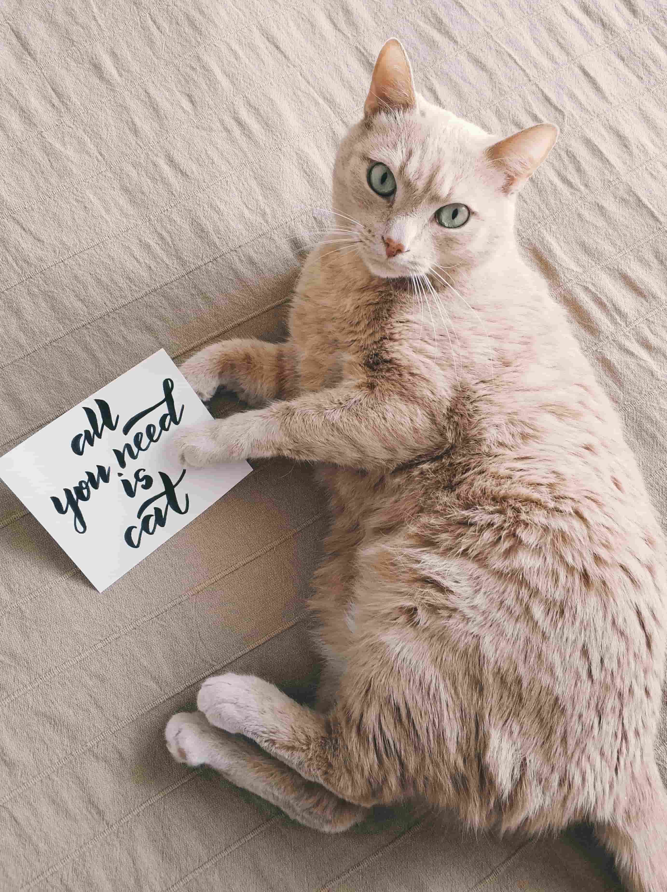
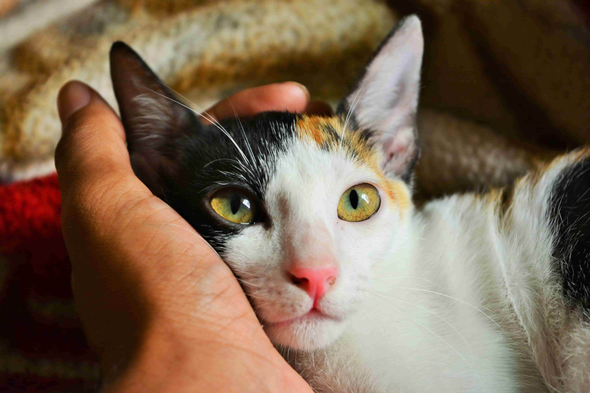
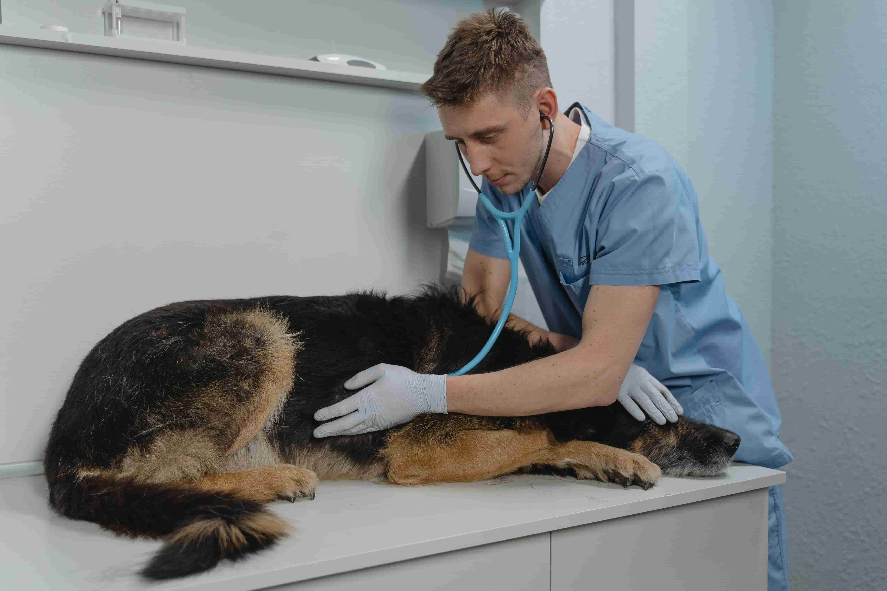

最新消息
首頁 /
最新消息

疫情期間環境清消，寵物返家皮毛清潔很重要
110 / 7/ 25
【新北市訊】本土新冠肺炎疫情尚未解除，政府機關及民間單位都積極強化環境消毒，新北市政府動保處提醒飼主，帶寵物外出時，除了飼主自身做好防疫措施外，也應該保護好寵物，外出回家時應幫毛寶貝做好皮毛清潔和消毒，避免寵物吸入、碰觸或誤食殘留消毒劑造成咳嗽、流口水、皮膚紅腫等身體不適症狀，讓毛寶貝放心出門、平安回家。
近期隨著疫情擴散，政府積極對各區實施環境消毒，依據行政院環境保護署制定的「COVID-19社區防疫公共環境消毒指引」，環境消毒劑建議為稀釋漂白水/次氯酸鈉(1000ppm)。動保處表示，少量接觸對寵物並無直接影響，且目前並無接獲相關通報案例，但仍提醒飼主，帶毛寶貝至戶外時，除了人與人間要減少互動、交談外，更要避免毛寶貝與其他動物間過多的互動;外出時飼主應該使用牽繩並注意毛寶貝動向，避免在散步時吸入、碰觸或誤食殘留消毒劑而造成咳嗽、流口水、皮膚紅腫等不適症狀。
毛寶貝醫療中心獸醫師林子筠表示，由於寵物與人不同，無法用衣物蔽體，身體皮毛跟手腳上都會留有地面的消毒劑，也較容易殘留病毒在身上，飼主帶毛寶貝進入家裡前，應該用乾淨的濕巾布替牠們擦拭、清潔手腳及皮毛，並定期每週幫毛寶貝洗澡，避免細菌帶回家，只要飼主做好上述自保措施，嚴加防疫的同時也能安心帶寵物外出。
動保處宣導，酒精、次氯酸水、漂白水、二氧化氯等，都不可直接噴在寵物身上。此外，新北市動保處更為了在疫情期間能保護毛小孩的身體健康，特別與多家寵物店及寵物醫院合作，在新北市各處設立「寵物健康生活站」，迄今已有46個據點，飼主可就近帶毛寶貝前往進行皮毛消毒。動保處持續推廣防疫新生活，強化防疫作為，並呼籲飼主，照顧犬貓前後須洗手、消毒、戴口罩，避免親密行為，減少傳染機會。
動保處表示，疫情期間飼主應遵守溜狗的必要防護措施，與寵物一起共同維護健康，安全渡過這次疫情危機，當然最好還是減少出門，才能降低風險，大家都有責任共同努力，當個優秀的「防疫小尖兵」，若確診者無親友協助照顧寵物，動保處將調度寵物安置旅館，每日安置費用為新台幣300元，最長14日，可協助餵養、清潔等基本照護，一同協助飼主抗疫。
新北市召開毛寶貝幸福委員會
110 / 7/ 25
【新北市訊】近期新冠肺炎疫情嚴竣，為避免群聚，新北市政府動保處在6月29日召開毛寶貝幸福委員會，並改為線上視訊會議，會中邀集各界專家學者、民間團體擔任委員，共同討論轄內民間動物收容所遭遇困境與好日子愛心大平台捐贈物資使用。疫情期間，為避免狗場斷糧，新北市寵物商業同業公會常務理事侯兆誠及台南市寵物商業同業公會理事長黃曉亭夫婦，拋磚引玉共同捐贈50包大包飼料，另聯享寵物貿易公司響應捐贈300包飼料，台灣皇家寵物食品公司也響應捐贈50包飼料，優先提供特別需要關懷的民間動物收容所，讓5500隻犬貓都能獲得妥善照顧。
受邀出席的包括台大獸醫系主任兼院長張芳嘉、榮譽教授劉振軒、台大法律系教授李茂生、社團法人中華民國保護動物協會理事長李朝全、台灣動物保護行政監督聯盟理事長王唯治及秘書長何宗勳、台灣防止虐待動物協會執行長姜怡如、社團法人中華海峽兩岸畜牧獸醫交流協會理事長黃國青、世界愛犬聯盟台灣總代表呂幼綸、台灣動物平權促進會執行長林憶珊、中華民國獸醫師公會全國聯合會理事長譚大倫、律師李承志等人，共同研商精進新北市動物福利及提昇動物保護形象。
民間動物收容所基於善心長期默默協助收容流浪動物，但因收容所多位於偏遠地區，加上負責人多屬高齡常是獨自照護犬隻，鄰避設施鮮少能有外界資源，動保處與「中華民國保護動物協會」及「流浪動物之家基金會」合作辦理23間民間動物收容所輔導訪視，並對其環境、防疫及人力進行了解。若已無法維持動物基本福祉者，協助分散犬隻媒合至他場；特別需要關懷者，給予包含物資、志工人力等協助，並不再增加收容數量；藉此協助及輔導收容所經營，提昇動物保護福祉。
李朝全表示，除前述問題外，民間動物收容所面臨土地取得困難、附近居民抗議陳情及負責人年事已高，無人承接經營等，針對這些議題動保處研擬方案，包含建請農委會修改法令，放寬地土地使用限制、補助民間收容所改善設備，以減少居民陳抗事件發生及媒合優良動保團體接手老舊收容所等，以避免危機發生。
動保處表示，新北市保護動物福祉，結合社會大眾共同愛護動物理念，呼籲善心大眾可以在新北市好日子愛心大平台捐款及捐資，由政府轉給有需要的民間動物收容所，並且由毛寶貝幸福委員會監督，每一筆民眾善款、物質將用在刀口上，讓資源發揮更大作用，透過各方專家學者的參與討論意見，多管齊下達成各界關心動保人士，對於流浪動物管理及照護的共識，精進動物收容品質及動物福址，宣揚動物保護觀念。

2021友善動物傑出里長獎開跑
110 / 7/ 25
【新北市訊】本土新冠肺炎疫情尚未解除，政府機關及民間單位都積極強化環境消毒，新北市政府動保處提醒飼主，帶寵物外出時，除了飼主自身做好防疫措施外，也應該保護好寵物，外出回家時應幫毛寶貝做好皮毛清潔和消毒，避免寵物吸入、碰觸或誤食殘留消毒劑造成咳嗽、流口水、皮膚紅腫等身體不適症狀，讓毛寶貝放心出門、平安回家。
近期隨著疫情擴散，政府積極對各區實施環境消毒，依據行政院環境保護署制定的「COVID-19社區防疫公共環境消毒指引」，環境消毒劑建議為稀釋漂白水/次氯酸鈉(1000ppm)。動保處表示，少量接觸對寵物並無直接影響，且目前並無接獲相關通報案例，但仍提醒飼主，帶毛寶貝至戶外時，除了人與人間要減少互動、交談外，更要避免毛寶貝與其他動物間過多的互動;外出時飼主應該使用牽繩並注意毛寶貝動向，避免在散步時吸入、碰觸或誤食殘留消毒劑而造成咳嗽、流口水、皮膚紅腫等不適症狀。
毛寶貝醫療中心獸醫師林子筠表示，由於寵物與人不同，無法用衣物蔽體，身體皮毛跟手腳上都會留有地面的消毒劑，也較容易殘留病毒在身上，飼主帶毛寶貝進入家裡前，應該用乾淨的濕巾布替牠們擦拭、清潔手腳及皮毛，並定期每週幫毛寶貝洗澡，避免細菌帶回家，只要飼主做好上述自保措施，嚴加防疫的同時也能安心帶寵物外出。
動保處宣導，酒精、次氯酸水、漂白水、二氧化氯等，都不可直接噴在寵物身上。此外，新北市動保處更為了在疫情期間能保護毛小孩的身體健康，特別與多家寵物店及寵物醫院合作，在新北市各處設立「寵物健康生活站」，迄今已有46個據點，飼主可就近帶毛寶貝前往進行皮毛消毒。動保處持續推廣防疫新生活，強化防疫作為，並呼籲飼主，照顧犬貓前後須洗手、消毒、戴口罩，避免親密行為，減少傳染機會。
動保處表示，疫情期間飼主應遵守溜狗的必要防護措施，與寵物一起共同維護健康，安全渡過這次疫情危機，當然最好還是減少出門，才能降低風險，大家都有責任共同努力，當個優秀的「防疫小尖兵」，若確診者無親友協助照顧寵物，動保處將調度寵物安置旅館，每日安置費用為新台幣300元，最長14日，可協助餵養、清潔等基本照護，一同協助飼主抗疫。
少一隻腳不氣餒！
110 / 7/ 25
【新北市訊】雖然只剩三隻腳，但我會用最樂天開朗的笑容面對願意愛我的人！今年4月底米克斯「阿MO」被救援回板橋動物之家，在收容時發現牠缺了右前腳，應是在流浪過程中受傷導致，經獸醫及動保員悉心照顧後已開放認養，只是少一隻腳的「阿MO」不像幼犬貓容易被認養，為幫助跟「阿MO」有相同境遇毛寶貝，新北市政府動保處特別推出犬貓回春雙響炮方案，民眾若有意願迎接「阿MO」回家，將享受多項認養人專屬優惠，幫助飼主全方位照顧毛寶貝。
幫「阿MO」取名的是動保員宋曉玲，她說「阿MO」已經是成犬性情穩定，不需煩惱牠是否會在家中調皮搗蛋，也習慣在日常生活中使用三隻腳維持平衡，牠充滿活力在運動場中奔跑時，速度絲毫不遜色其他犬隻，向動保員撒嬌時總是露出燦爛笑容融化大家的心，不只親人也親狗，不用擔心跟其他狗狗吵架，看不出不久前牠還在外頭坎坷流浪，希望個性優質的陽光男孩「阿MO」能突破身體缺陷這層困境，順利被認養出去。
板橋動物之家駐區獸醫黃亭瑄表示，飼主在照顧截肢犬隻時需要更多耐心，讓牠適度運動鍛鍊腿部肌肉，注意別讓關節承受太多負擔，能讓毛寶貝在運動同時舒緩心理壓力，飼主家中環境可配合犬隻狀況，盡量避免垂直上下階梯，以減少犬隻行動上阻礙，最重要的是飼主願意付出時間及負起責任陪伴毛寶貝，讓牠過上快樂幸福日子。
動保處長期積極推廣犬貓認養，於今年3月推出犬貓回春雙響炮方案，若認養動物之家10歲以上犬貓、身患殘疾或長期收容犬貓，可享有寵物終身免費健檢及疫苗注射、心絲蟲預防藥、免費輔具等多項優惠福利，在減輕飼主經濟負擔同時，也讓毛寶貝能獲得更完善照護，幫助更多高齡、殘疾犬貓有機會找到溫暖新家。

帶狗上班免費施打狂犬病疫苗
110 / 7/ 25
【新北市訊】狗狗是人類最好的朋友，新北市政府動保處在國際狗狗日這一天要向民眾呼籲，愛護狗狗支持認養不棄養觀念，民間企業當天開放帶狗狗上班，只要聯繫動保處，將安排公務獸醫師，到公司為狗狗免費施打一劑狂犬病預防針，優惠並加碼到8月底止，鼓勵民間企業打造友善動物環境！
國際狗狗日是由美國「全國狗節基金會」創辦人Colleen Paige，於2004年發起的節日，希望透過狗狗日的設立，讓人類思考狗狗對我們的重要性，每一個人都可以透過擔任志工、捐款和提供對狗狗的陪伴，來打造更友善狗狗的生活環境，新北市8間公立動物之家為了打造更友善動物環境，提升認養率，於今年推動「333政策」、「回春雙響炮」等方案，截至7月底已收容3,168犬貓，累積認領養數達2,950隻犬貓，認養率93%，希望能幫助動物之家的毛寶貝們找到歸宿。
除了動物之家外，希望民眾在上班時也能有狗狗的陪伴，經研究指出寵物有安定人心、抗憂鬱及增進大腦思考等功效，將寵物飼養在上班環境中能為公司增添新樂趣新活力，也可教育飼主做好狗貓禮貌運動、培養友善動物觀念，為鼓勵民間企業打造寵物友善之上班環境，如企業當天開放員工帶狗狗上班，可聯繫動保處安排公務獸醫師，到公司為需要的狗狗免費施打一劑狂犬病預防針，優惠並加碼到8月底止，歡迎民間企業來電申請！
板橋動物之家動保員余重諾表示，園區招牌狗「大頭」每天都會在辦公室乖乖地陪伴同事們一起上班，牠不會吵不會鬧，要上廁所也都會很有規矩地到外面自行解決，已經成為板橋動物之家狗狗們的榜樣。讓狗貓陪主人一起上班是十分療癒人心的一件事，不僅可以提升工作效率，也可以增加員工間的情感交流，有益員工促進身心及健康發展，非常推薦大家可以效仿帶狗狗一起上班。
動保處表示，新北市持續推廣認養不棄養及愛護動物觀念，狗狗是人類的好朋友，理應受到善待及愛護，由政府單位帶頭做起，希望帶動私人企業鼓勵員工帶狗上班，打造友善動物環境，讓工作場所產生積極性的變化，舒緩員工工作壓力焦慮並提高士氣，也歡迎企業到新北市8所動物之家認養動物，一起為精進友善動物環境而努力。